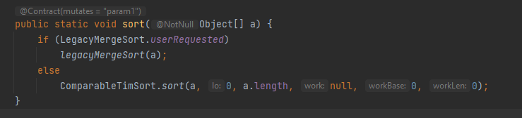
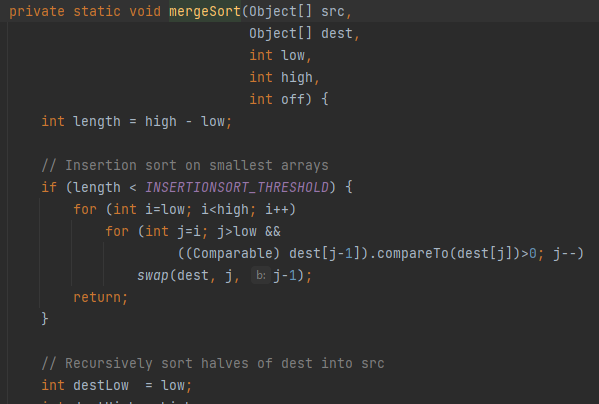

Como ya sabemos, existe una clase en Java llamada Arrays que tiene algunos métodos ya implementados con funcionalidades útiles para trabajar con arrays. Uno de ellos es el método sort(). Esta forma de ordenar arrays es mucho más sencilla y automática que las anteriores, y además no tenemos que hacer prácticamente nada: Java lo hace todo por nosotros.
Si buscamos un poco en alguno de nuestros proyectos, podemos ver que método sort() utiliza internamente el algoritmo Mergesort,


Bueno, vamos al grano. ¿Cómo se usa?
int [] array = {4,6,2,8,7};
Arrays.sort(array);Simplemente con eso, el array quedará ordenado de forma ascendente. Basta decirle el array que queremos ordenar al método sort(), y el cambio quedará hecho sobre el propio array.
Podemos comprobar que ha funcionado mostrando el array por pantalla tras la ejecución de sort():
for (int i = 0; i < array.length; i++) {
System.out.println(array[i]);
}Si lo que buscamos es ordenarlo de forma descendente (de mayor a menor) debemos decirle al método sort() que lo ordene al revés, pero OJO.
Este proceso sólo funciona con arrays de objetos, no con arrays de tipos primitivos (como nos sucede con el método .asList()). Por tanto, si lo que buscamos es ordenar descendentemente el array del ejemplo (int), tenemos que cambiar el tipo y usar Integer en vez de int de la siguiente forma:
Integer [] array = {4,6,2,8,7};
Arrays.sort(array, Collections.reverseOrder());Como puedes comprobar, además del array, le debemos indicar Collections.reverseOrder(). De esta forma, la ordenación se realizará en orden inverso.